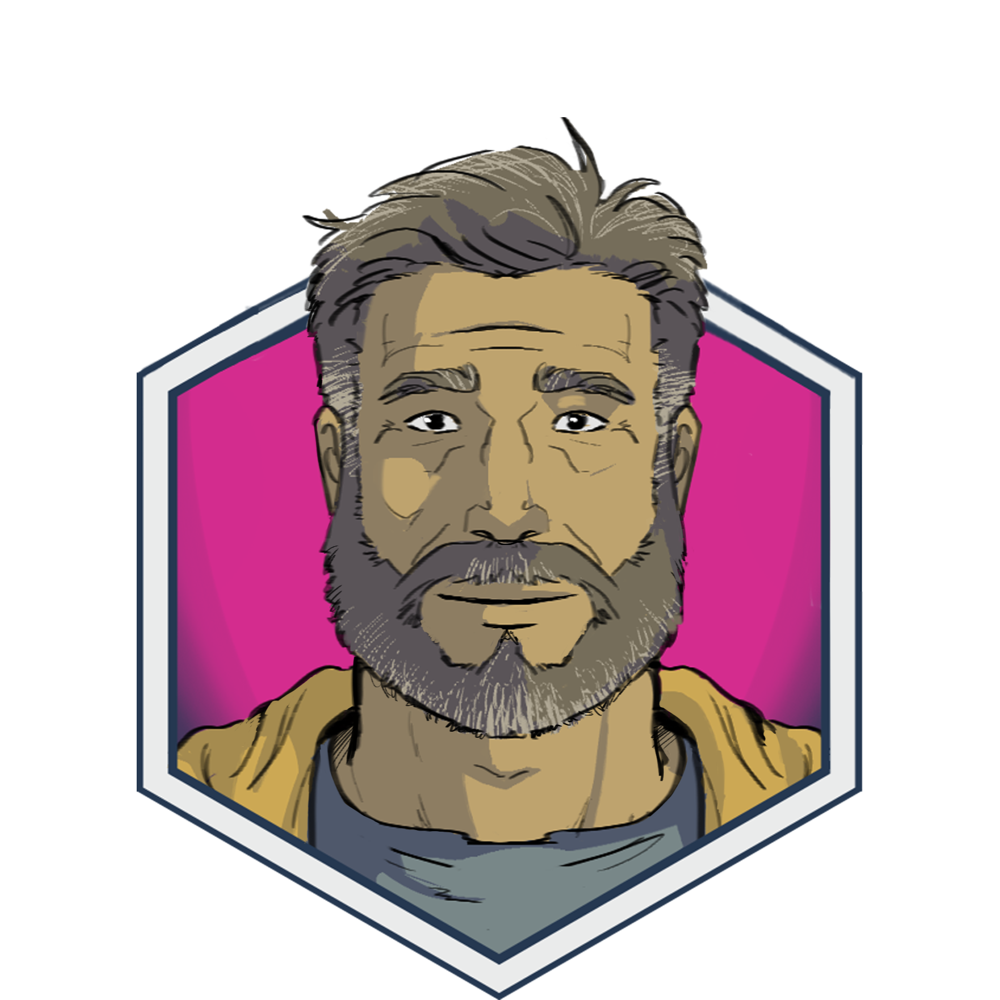

Characters
Gideon Gates
AI scientist seeking the truth.
Emmeline Riggs
Grounded technician and loyal friend.

ART
AI companion and trusted source of wisdom.

Josiah Thorne
Courageous street preacher.
Everit LeStrat
Builder of empires.